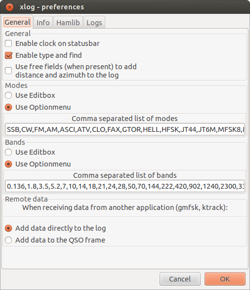
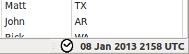
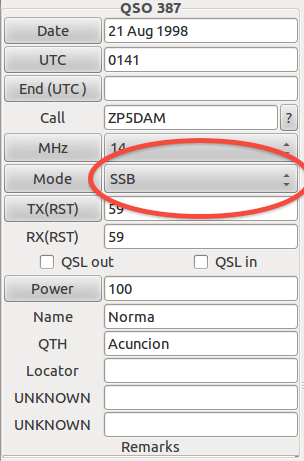
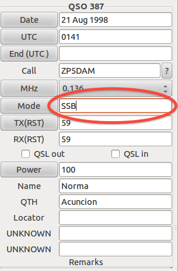
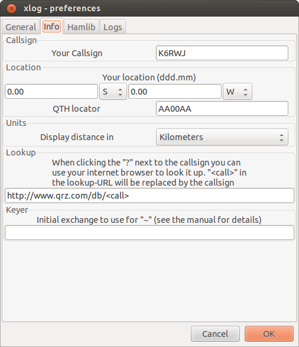
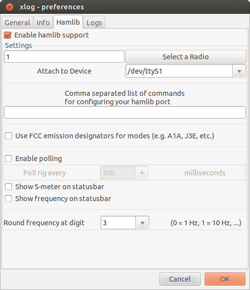
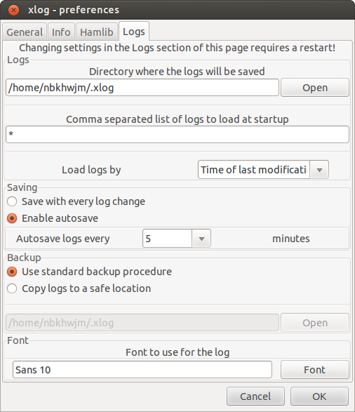

xlog stores and recalls several settings in GKeyFile format in the file /[USER_HOME]/.xlog/xlog.cfg. To change these, select Settings -> Preferences from the menu.
General Preferences
This page allows you to choose an editbox to enter band and mode instead of using the default optionmenu. This is especially useful when using hamlib, so the extra digits of your frequency can be filled in.

General
- "Enable Clock in Statusbar"
- Shows the clock on the windows status bar

Clock in the Statusbar
- "Enable Type and Find"
- allows matches to be found in searches as characters are typed instead of waiting until enter is pressed.
- "Use free fields (when present) to add distance and azimuth to the log"
- When this is selected, distance and azimuth will be calculated from the locator field (when present) and added to the log.
Modes
- Defines how operation modes are shown in the logs, either as a free text entry or a drodown list.
- "Use Editbox"
- "Use Option Menu"
- "Comma Separated List of Modes"
- Enter in a text list, separated by commas of all the modes to show in the list in the log entry window.
- Default: SSB, CW, FM, AM, ASCI, ATV, CLO, FAX, GTOR, HELL, HFSK, JT44, JT6M, MFSK8, MFSK16, MTTY, MT63, OLIVIA, PAC, PAC2, PAC3, PCW, PKT, PSK31, PSK63, PSK125, Q15, RTTY, SSTV, THRB, TOR
- See Appendix A - Supported Modes for a complete list of supported values
Bands
- Defines how bands are shown in the logs, either as a free text entry or a drodown list.
- "Use Editbox"
- "Use Option Menu"
- "Comma Separated List of bands"
- Enter in a text list, separated by commas of all the modes to show in the list in the log entry window.
- Default: 0.136, 1.8, 3.5, 5.2, 7, 10, 14, 18, 21, 24, 28, 50, 70, 144, 222, 420, 902, 1240, 2300, 3300, 5650, 10000, 24000, 47000, 75500, 120000, 142000, 241000, 300000
- See Appendix B - Supported Bands for a complete list of supported values

Sample QSO entry with a Drop Down field |

Sample QSO entry with a Edit Box field |
Remote Data
When receiving data from another application (gmfsk, ktrack), either
- Add data directly to the log
- Add data to the QSO Frame
When 'Enable type and find' is checked, all the logs will be searched for a callsign match and when found, fill in name, QTH, locator and remarks like in the previous QSO.
Info Preferences

Callsign
Enter your callsign in the "Your Callsign" field. This value will also be used to name the logfiles that Xlog creates.
Location
In order to calculate the correct distance to your location, you have to enter your longitude and latitude in the Info page. Changing it will automatically update the QTH locator field. The QTH locator field is important when you intend to make VHF/UHF QSO's and you have a locator field in the log.
Units
You can also choose whether the distance should be displayed in Kilometers or Nautical Miles.
Lookup
In the main xlog window there is a button next to the callsign entry. When clicked it will lookup the callsign with your internet browser on your preferred server. It takes the form http://www.qrz.com/<call>, where <call> will be replaced with the callsign.
Keyer
The use of the tilde character is explained in the "Keyer window" section.
HamLib Preferences

Log Preferences

Logs
- "Directory where the logs will be saved"
- Determines where the logs will be written.
- "Comma Separated list of logs to load at startup"
- This field determines which logs are loaded at startup. The command line will take priority over this value. Wildcards are accepted, and the extension will always default to ".xlog". Example: 'p*' will load all logs starting with 'p' and ending with '.xlog'.
- "Load logs by"
- "Time of last modification"
- Logs are loaded by creation date order, you can use the command 'touch' in the linux terminal to alter the creation time.
- "Alphabetical"
- Load logs in standard alpha order
Saving
- "Save with every log change"
- Save the log each time a new entry is added, edited or deleted.
- "Enable Autosave"
- Will save the logs based ont he time value defined by "Autosave logs every (x) Minutes"
- "Autosave logs every"
- Defines the time in minutes to wait between auto log saves.
- Possible values are 0, 5, 10, 20, 30, 40, 50, 60. 90, 120
- A value of 0 (zero) effectively disables the autosave option, you will need to manually save the log each time.
Backup
Defines the backup procedure to use with these logs.
- "Use Standard Backup Procedure"
- Save the backup logs to the same location as the main log, with the added extension ".backup".
- "Copy logs to a safe location"
- Copy the backup logs to the location defined by the path below.


 1.8.6
1.8.6